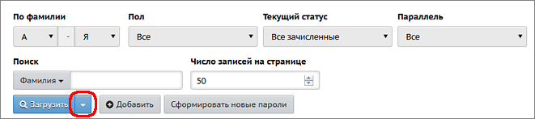

Просмотр списка родителей
| · | для просмотра общего списка родителей в алфавитном порядке выберите параметры фильтров "По фамилии" и "Пол" и нажмите кнопку Загрузить.
|
| · | для просмотра списка родителей конкретного класса выберите "Текущий статус" = "Все зачисленные", затем нужные "Параллель" и литеру класса и нажмите кнопку Загрузить.
|
|
Нажав на треугольник справа от кнопки Загрузить, вы можете настроить вид списка родителей.
Откроется окно "Настройки", в котором можно отметить дополнительные поля, и они появятся в списке. |
 |
Кнопка Экспорт в Excel в правой верхней части экрана позволяет сохранить список родителей в формате Excel. В том числе, таким образом при помощи Excel можно распечатать список. В файл Excel попадает тот же самый набор полей, который отображён на экране (в том числе это касается выбранных фильтров).
Быстрый поиск родителей
Чтобы быстро найти нужного родителя, в графе "Поиск" введите первые буквы фамилии, и список будет сразу ограничен нужными фамилиями.
Редактирование, добавление и удаление
Для получения подробной информации о родителе нажмите на него левой кнопкой мыши, и вы окажетесь на странице Сведения о родителе. Вы можете:
| · | редактировать сведения - при наличии права доступа Редактировать все сведения об учениках и родителях либо Редактировать сведения об учениках и родителях в своём классе;
|
| · | просматривать сведения - при наличии права доступа Просматривать краткие сведения об учениках и родителях (если у вас нет прав редактирования).
|
Кнопка Добавить позволяет ввести новые записи родителей с помощью формы для ввода.
Чтобы удалить родителя, войдите в его личную карточку и нажмите кнопку Удалить. Для такого удаления необходимо иметь право доступа Удалять пользователей из системы.
Кнопка "Сформировать новые пароли"
Администратор системы может провести индивидуальную или массовую смену паролей, с присвоением случайных паролей, которые он затем может раздать родителям. (Эта функция работает полностью аналогично сотрудникам или учащимся.)
| 1. | Выведите на экран список родителей (с помощью кнопки Загрузить).
|
| 2. | Нажмите кнопку Сформировать новые пароли.
|
| 3. | Отметьте родителей, которым система должна сгенерировать новые пароли. Для этого просто щёлкните по нужным строкам в таблице: при выделении строки меняют цвет. Затем нажмите кнопку Продолжить. Обратите внимание! Выбранным родителям будет сброшен их текущий пароль.
|
| 4. | Система присвоит выбранным родителям новые пароли, которые будут случайной последовательностью латинских букв, цифр и знаков препинания.
|
| 5. | На экран будет выведена таблица родителей, которым сформированы новые пароли, с удобной возможностью распечатать этот список. Обратите внимание! Кроме этой таблицы, новые пароли нигде не отображаются, их необходимо сразу распечатать либо скопировать с экрана.
|
| 6. | При первом входе в систему родителя с новым паролем, система предложит ему сменить пароль на свой собственный.
|
Кнопка Сформировать новые пароли доступна только пользователям с ролью "Администратор системы", причём только если для этой роли выставлены права доступа: Редактировать все сведения об учениках и родителях и Редактировать имена пользователей и пароли учеников и родителей.